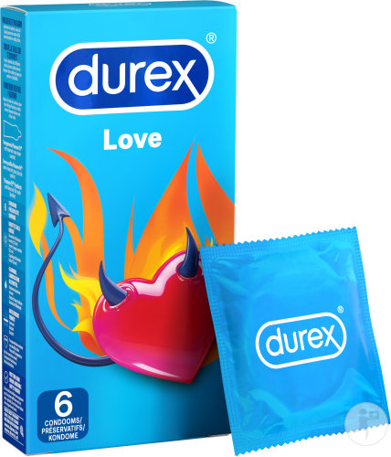
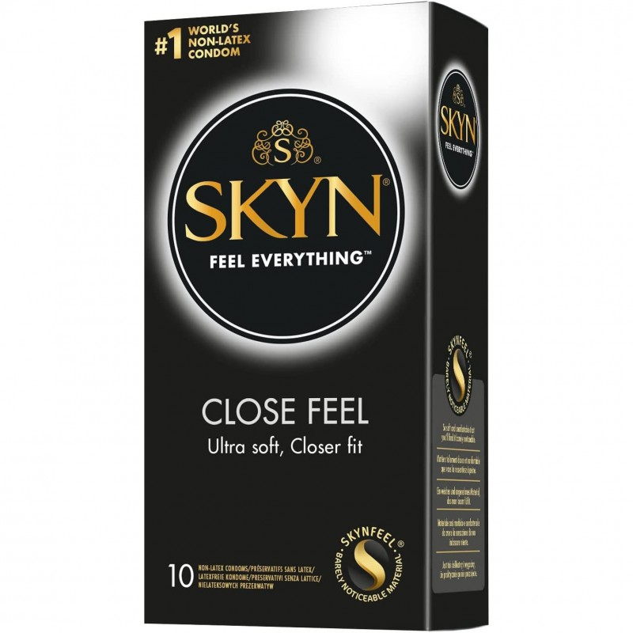
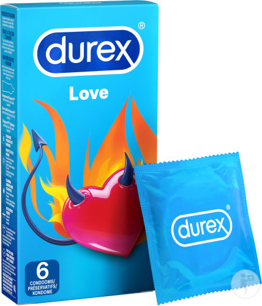
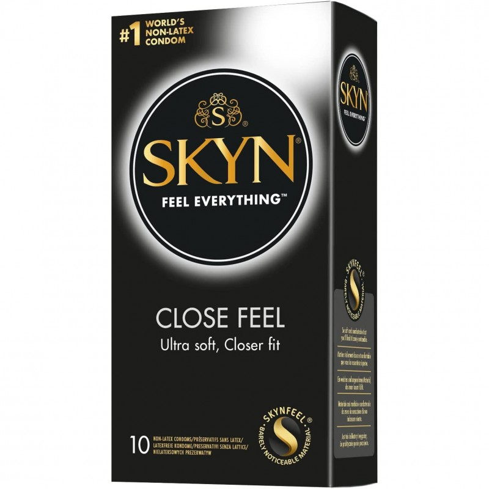

Voici le site du comparatif des empreintes numériques et écologiques de Durex et Skyn.
Par Mathéo DEGHAYE, Rafael DE-CLERCK et Adrien MATHIEU
BUT Informatique groupe A1
 Par Mathéo DEGHAYE, Rafael DE-CLERCK et Adrien MATHIEU
BUT Informatique groupe A1
 